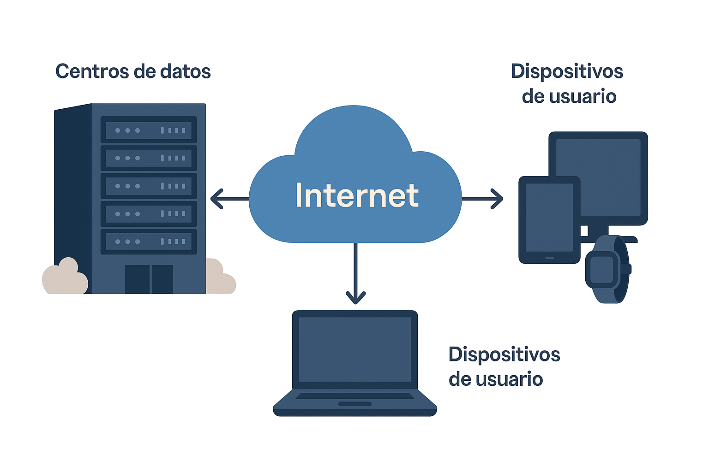

Parts del núvol: infraestructura i arquitectura bàsica
Tot i que sovint parlem del núvol com d’una cosa llunyana o abstracta, la realitat és que es basa en una infraestructura física i lògica molt ben organitzada. La podem imaginar com una xarxa mundial de grans centres de dades interconnectats, reforçada per xarxes de comunicacions estables i accessibles des de qualsevol dispositiu.
Els elements essencials són:
Centres de dades
Són instal·lacions de gran mida, situades estratègicament en diferents punts del planeta per garantir disponibilitat i velocitat. Aquests edificis allotgen milers de servidors i equips de refrigeració, seguretat física i control energètic. Són la base del núvol: allà s’emmagatzemen, es processen i es protegeixen totes les nostres dades.
Xarxa de comunicacions (Internet)
La xarxa de comunicacions és la connexió que fa possible que puguem enviar i rebre dades entre el núvol i els nostres equips, de forma ràpida i segura. Sense aquesta xarxa global, el núvol no existiria tal com el coneixem. La qualitat de la connexió, la latència (temps de resposta) i l’amplada de banda determinen la velocitat i l’experiència d’usuari.
Dispositius d’usuari
Són la porta d’entrada per treballar al núvol: ordinadors, smartphones, tauletes i fins i tot dispositius IoT (sensors, càmeres, rellotges intel·ligents…). Des d’ells accedim, consultem, editem i compartim informació allotjada de forma remota.
Perquè tot funcioni bé, la virtualització i l’escalabilitat són clau.
- La virtualització és una tecnologia que permet dividir un servidor físic en diversos servidors virtuals, cadascun independent i amb els seus propis recursos. D’aquesta manera, podem aprofitar al màxim la capacitat dels centres de dades i garantir que no es malbaratin recursos. Per exemple, si una empresa necessita allotjar diverses aplicacions, pot fer-ho en màquines virtuals diferents dins d’un mateix servidor físic, optimitzant costos i manteniment.
- D’altra banda, l’escalabilitat és la capacitat del núvol per adaptar-se de forma flexible a les necessitats de cada moment. Això vol dir que podem augmentar o reduir la potència de processament, l’espai d’emmagatzematge o la memòria disponible segons la demanda real del nostre negoci. Si un mes necessitem més recursos perquè tenim més clients o més activitat, els podem ampliar de seguida; i si en un altre moment baixa l’activitat, els podem reduir per no pagar de més. Aquesta flexibilitat és un dels grans avantatges de treballar amb solucions cloud davant d’infraestructures locals més rígides i costoses de mantenir.

Cada vegada que guardem un fitxer, enviem un correu o col·laborem en línia, estem fent servir una infraestructura molt més real del que sembla. Per entendre-la, investigarem com funciona realment l’arquitectura Cloud.
En aquesta activitat, treballarem en petits grups de 3 o 4 persones per investigar un proveïdor real de serveis al núvol (per exemple, Google Cloud, Microsoft Azure, Amazon AWS o un altre).
Seleccionarem la seva pàgina oficial, un article fiable o una infografia actualitzada i, a partir d’aquesta informació, respondrem:
- On guarden les nostres dades? Quin tipus d’edificis o instal·lacions utilitzen per protegir-les?
- Per què és important tenir una bona connexió a Internet per treballar al núvol?
- Quins dispositius fem servir normalment per entrar al núvol? Creus que en el teu futur treball s’utilitzaran mòbils, ordinadors, tauletes…? Quins serien més pràctics?
- Quin avantatge té poder ampliar o reduir espai i recursos al núvol segons el que necessiti l’empresa?
Per exposar el que hem après, crearem un esquema visual o una infografia clara i senzilla (podem utilitzar eines com Canva o Genially). Finalment, farem una breu presentació a la resta de la classe per compartir les principals conclusions i exemples.
Per ajudar-nos a completar aquesta activitat pas a pas, hem preparat la següent fitxa Arquitectura Cloud de treball. La podem descarregar en format editable i en pdf.
Per últim, anotarem tots aquests passos i la nostra infografia a la nostra carpeta d’aprenentatge (LOG) amb extensió .OC.